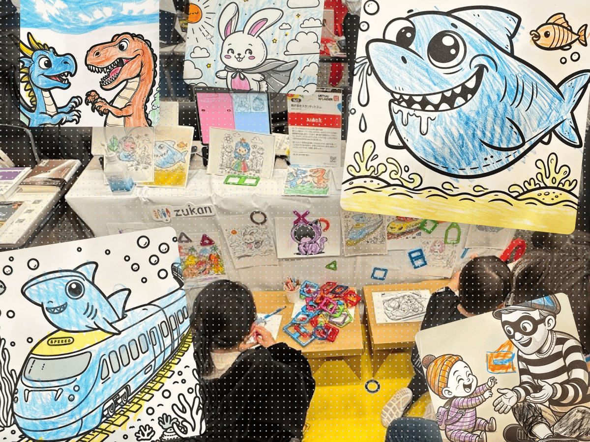
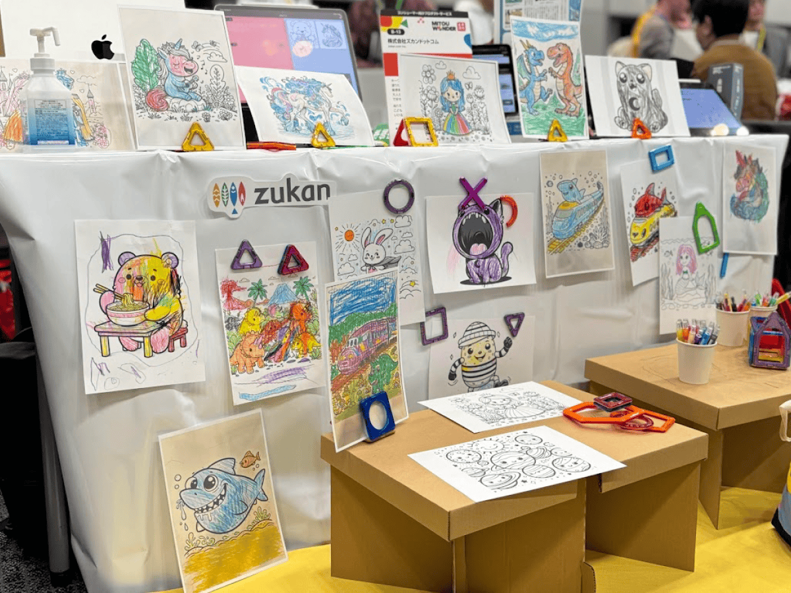
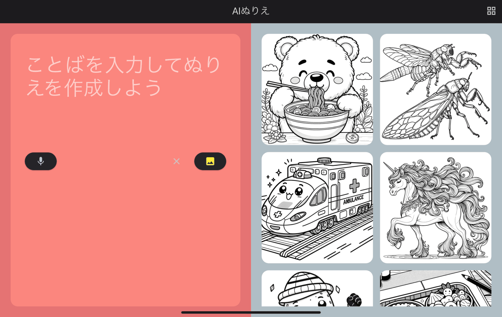
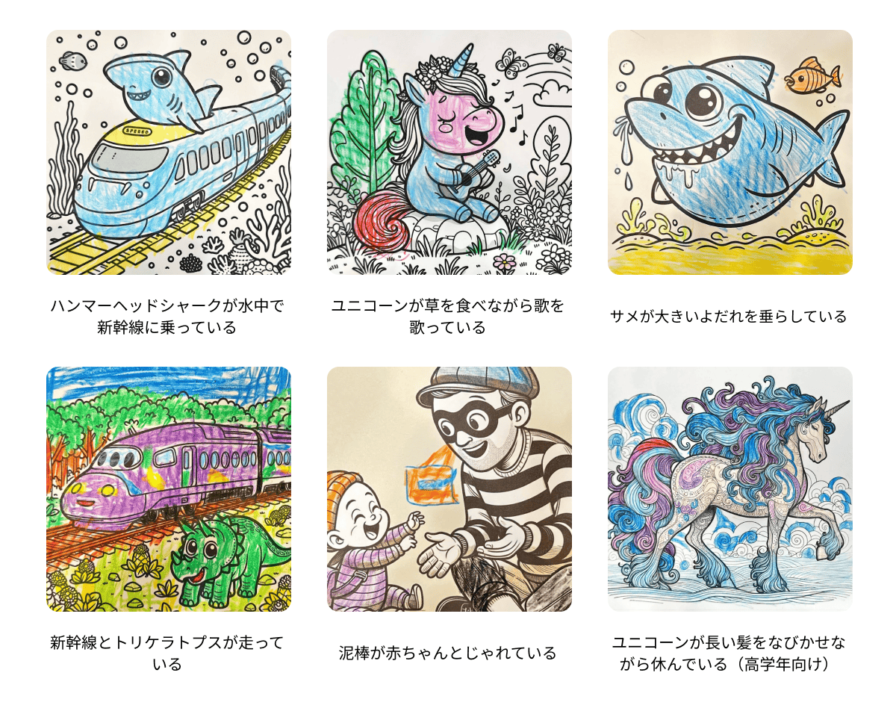
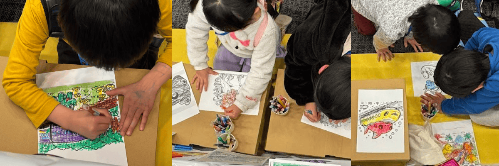

2024年3月10日、ベルサール秋葉原で開催された技術イベント『未踏会議2024』に、株式会社ズカンドットコムは新規開発中の「AIぬりえ」を出展しました。このイベントは、独立行政法人情報処理推進機構（IPA）及び一般社団法人未踏が主催し、経済産業省の共催で行われました。

春の息吹と共に、秋葉原の地が一日限りの想像力の祭典に染まった日がありました。そう、「未踏会議2024」です！🌈 株式会社ズカンドットコムは、この日、まだ世に出ていない魔法のような「AIぬりえ」を持って参戦しました。

この「AIぬりえ」、あらかじめ大人が作った原画を塗るただのぬりえとは一味も二味も違います。こどもたちが「もしも〜な場面があったら？」という夢を語りかけると、AIぬりえを通してその夢が即座にぬりえの原画となって返ってくるのです。開発をリードし、当日のブースの案内をしたのは、IPA未踏スーパークリエータの直江憲一。

AIぬりえのブースでは、想像力の扉を開く魔法の言葉「どんな絵でぬりえをしたい？」から始まりました。ワークショップでは、夢中でカラフルな世界を塗りつぶすこどもたちの笑顔が溢れていました。「ハンマーヘッドシャークが新幹線に乗ってる場面」という、どこまでも自由な発想のぬりえが、ここにはあります。初めてのAIぬりえに戸惑いながらも、一つ一つの発想がこどもたちの中から芽吹き始めました。「新幹線とトリケラトプスが走ってる」「ティラノサウルスとドラゴンが戦ってる」「ダンスしている泥棒」とか「髪の長いユニコーン」。そんな夢が次々と紙の上でカラフルに花開いていきます。


この日、約20人の小さなアーティストたちが新たな自己表現を見つけました。株式会社ズカンドットコムは、今回の好評を受けて、今後、AIぬりえ体験会などワークショップの開催を積極的に行っていきます。技術的なお問い合わせや共同研究、ワークショップのご依頼、業務提携に関するご相談は、以下の問い合わせ先までお気軽にご連絡ください。
担当: 直江憲一
メールアドレス: info@zukan.com
ニュースレターで、AIぬりえの最新情報をお届けしています。
https://coloring.zukan.com
出展したイベント「未踏会議2024」の開催概要
日時 ：2024年3月10日（日）10:00～17:00
会場 ：ベルサール秋葉原
〒101-0021東京都千代田区外神田3-12-8住友不動産秋葉原ビルB1・1F・2F
主催 ：独立行政法人 情報処理推進機構（IPA）、一般社団法人未踏
共催 ：経済産業省